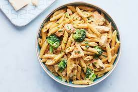

Chicken Alfredo Pasta

Description
Indulge in creamy Chicken Alfredo Pasta, a classic Italian-American dish. Tender chicken breast pieces are simmered in a rich and creamy Alfredo sauce, served over perfectly cooked pasta. This comforting meal is sure to please your taste buds and satisfy your hunger.
Ingredients
- Chicken breast
- Fettuccine pasta
- Heavy cream
- Butter
- Garlic cloves
- Grated Parmesan cheese
- Salt and pepper
- Fresh parsley (optional, for garnish)
Steps
- Cook the pasta according to package instructions.
- Sauté chicken breast in butter until cooked through.
- Add minced garlic and cook until fragrant.
- Pour in heavy cream and simmer until slightly thickened.
- Stir in grated Parmesan cheese until melted and smooth.
- Toss cooked pasta with the Alfredo sauce.
- Serve hot, garnished with fresh parsley if desired.